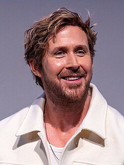

Ryland Grace — Ryan Gosling
O protagonista e único sobrevivente humano da missão. Professor de ciências do ensino médio recrutado à força por Eva Stratt por causa de sua tese sobre formas de vida extraterrestre não baseadas em água. Gosling também atua como produtor executivo do filme.

ProtagonistaÚnico Sobrevivente